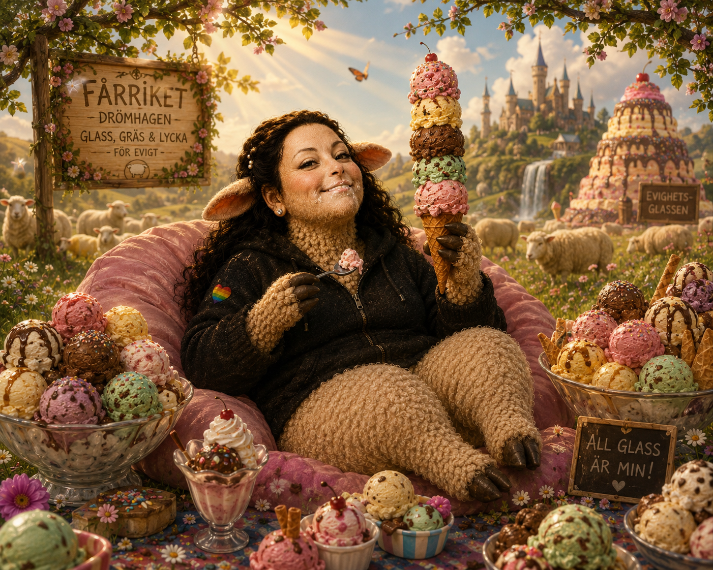

🍦 Regel nummer ett
Bestäm minst tre reservsmaker innan du går fram till disken. Annars kan glasspanik uppstå.

Glassmagasinet Visby
Viktig information om lägret:
• Ja, Gud älskar dig.
• Ja, du måste dricka vatten.
• Men framförallt:
det finns väldigt mycket glass.
Försök inte läsa alla smaker på tom mage. Det har hänt incidenter tidigare.
Bestäm minst tre reservsmaker innan du går fram till disken. Annars kan glasspanik uppstå.
Glass är fantastiskt, men vatten är fortfarande viktigt. Bäänitha protesterar, men accepterar.
Dela smakupplevelser med gruppen. En bra glassrapport kan rädda någons dag.